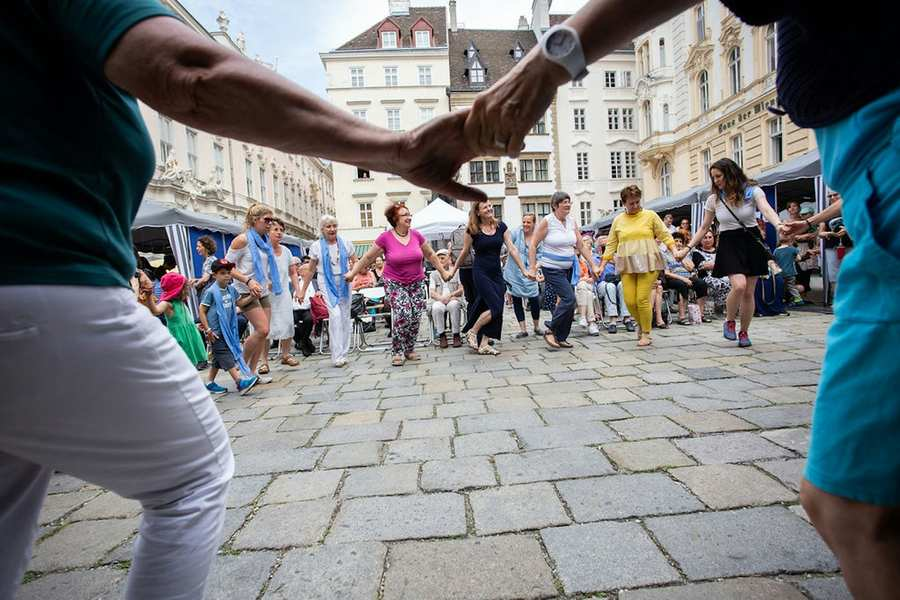
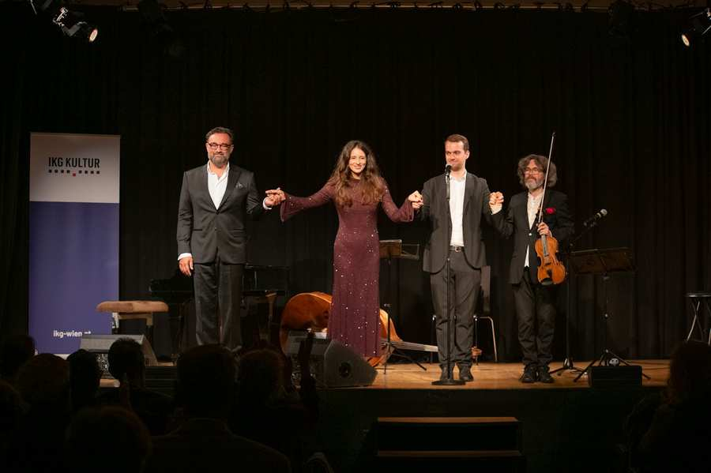
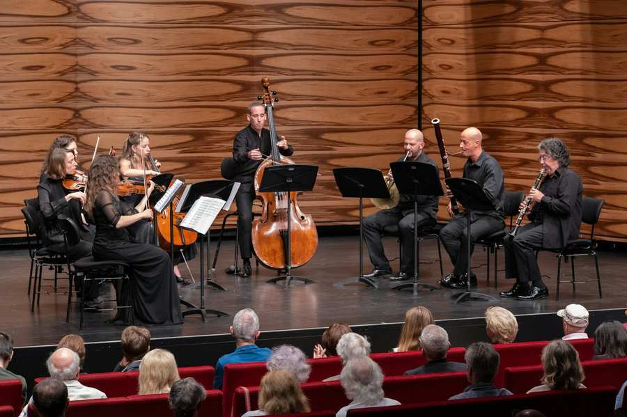
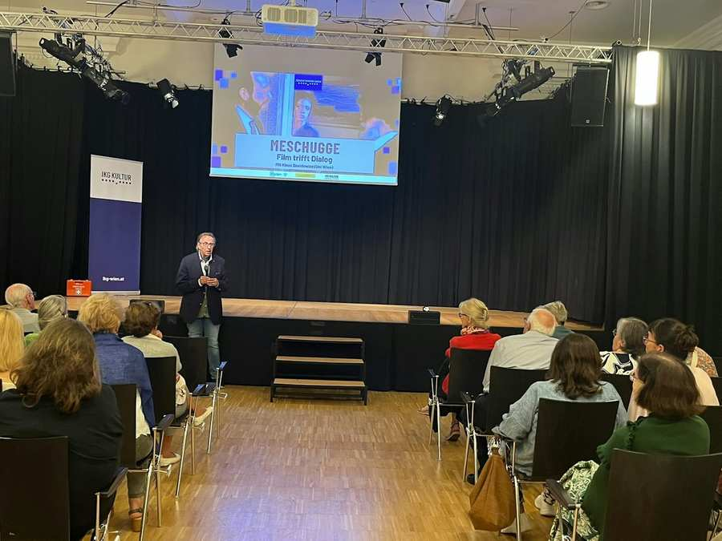
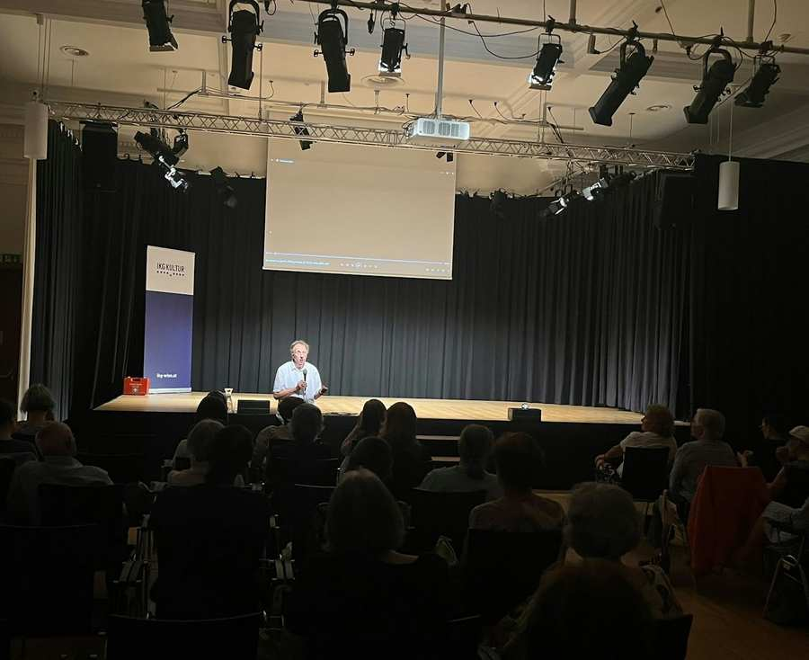
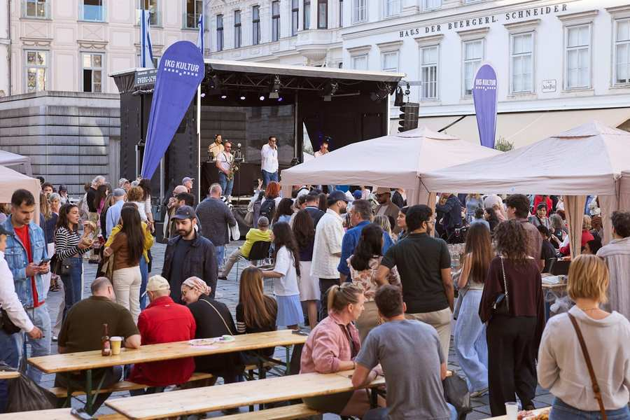

Kultur
Kultur Nachrichten

Mirna Funk begeistert mit ihrem neuen Roman "Balagan"
Ein gelungener und inspirierender Buchabend im ZiB: Die Bestsellerautorin Mirna Funk stellte am 22. Oktober in Baden ihren aktuellen Roman „Balagan...

„Oz’s List“: Ein besonderer Filmabend zum 7. Oktober
Ein ausverkauftes Metrokino, ein Film über außergewöhnlichen Mut und die persönliche Begegnung mit einem Menschen, der die Ereignisse des 7. Oktobe...

„Waltzing in the Clouds“: Ein musikalischer Auftakt zum neuen Jahr
Volles Haus und beste Stimmung im ZiB: Am 24. September fand anlässlich des Auftaktes zum neuen Jahr ein besonderer musikalischer Abend in Baden st...

Jüdisches Neujahrskonzert: Ein gelungener Auftakt zu Rosch HaSchana
Unter dem Motto „Le’Chaim – Auf das Leben“ feierte die Israelitische Kultusgemeinde Wien am 8. September im MuTh den Auftakt zum jüdischen neuen Ja...

Film trifft Dialog: "Meschugge" im ZiB
Am 26. August fand im vollen Zentrum für interkulturelle Begegnung (ZiB) die Fortsetzung der Veranstaltungsreihe Film trifft Dialog mit dem Film „M...

NOGA im Kino Wie Noch Nie – Noga Erez persönlich zu Gast
Die ausverkaufte Vorführung der Dokumentation NOGA am 19. August begann mit einer besonderen Begegnung: Noga Erez begrüßte das Publikum vor dem Fil...

Film trifft Dialog: Eine Zeitreise zwischen Tradition und Gegenwart im ZiB
Die Vorführung von „An American Pickle“ stieß auf großes Interesse und war sehr gut besucht.

Jüdisches Straßenfest am Judenplatz begeisterte mit Musik, Tanz und Begegnung
Am 14. Juni wurde der Judenplatz bei angenehmen Sommerwetter erneut zum Schauplatz eines lebendigen Festes der Begegnung.
Events


Lebendig, vielfältig und verbindend – so lautet das Motto des Kulturprogramms der IKG.Kultur, der Kulturabteilung der Israelitischen Kultusgemeinde Wien.
Die Kulturarbeit für unsere Gemeinde ist außergewöhnlich facettenreich: So gilt es den Bogen zwischen der vergangenen, vertriebenen, beinahe ausgelöschten ost- und mitteleuropäischen jüdischen Kultur aus der Zeit vor der Shoah, über die Gegenwart bis zu einer zukünftigen internationalen jüdischen Kultur zu spannen.
Durch Veranstaltungsformate wie beispielsweise das Jüdische Straßenfest, das Kantorenkonzert oder das Jüdische Neujahrskonzert zeigen wir die lebendige Vielfalt der jüdischen Kultur und vermitteln gleichzeitig zwischen der jüdischen und der nichtjüdischen Öffentlichkeit.
Auch wegen der neuen und weltweit wieder erstarkten antisemitischen Ressentiments beschreiten wir diesen Weg der Öffnung und der Begegnung.
Sich verstehen und gegenseitig akzeptieren, Vorurteile erst gar nicht aufkommen lassen – wie schafft man das in unserer heutigen radikalisierten Welt? Wir versuchen es mit der Vielfalt zeitgenössischer jüdischer Kunst und Kultur.
Highlights 2026
Mendele Lohengrin - ein Klezmer Singspiel
Jüdisches Straßenfest
Jüdisches Neujahrskonzert
Kantorenkonzert
Jüdische Kultur Erleben
Jiddisch für Anfänger
In diesem Online-Format erklärt Roman Grinberg - mit seiner unverkennbaren und humorvollen Art - jiddische Begriffe und Redewendungen.
Mehr
Podcast Chuzpe – jung und irgendwie jüdisch
Die Podcast-Reihe "CHUZPE – jung und irgendwie jüdisch" bringt in 15 Folgen junge jüdische Stimmen aus Kunst und Kultur vor das Mikrofon.
MehrDas jüdische Straßenfest
Mit dem Straßenfest feiern wir die Vielfalt des jüdischen Lebens. Zahlreiche jüdische Organisationen und Institutionen bieten Einblick in ihr Schaffen. Neben Bühnenshows, Livemusik und Kinderprogramm, gibt es Kulinarik aus der koscheren Küche und jüdischen Volkstanz.
MehrLiteraturcafé
In gemütlicher Kaffeehausatmosphäre präsentieren Autorinnen und Autoren ihre aktuellen Bücher.
MehrJüdisches Neujahrskonzert
Seit 2022 neuer Fixpunkt im Kulturkalender. Alle Menschen sind herzlich willkommen gemeinsam mit der jüdischen Gemeinde das Leben und die Vielfalt zu feiern. Heuer findet das jüdische Neujahrskonzert am 1. Oktober statt.
MehrKantorenkonzert
Mit dem alljährliche Kantorenkonzert kann das Wiener Publikum die Kunst der Chasanut - kantoraler Gesang - live erleben. Mit Oberkantor Shmuel Barzilai und einem Special Guest.
Mehr